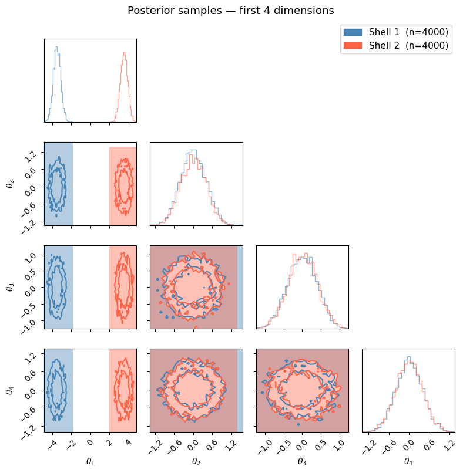

Twin Gaussian Shell Evidence with NumPyro + MorphZ#
This notebook demonstrates how to estimate the Bayesian evidence (log marginal likelihood, ln Z) for the twin Gaussian shell benchmark problem using:
NumPyro for posterior sampling (via NUTS with multi-chain initialisation)
MorphZ for evidence estimation from posterior samples

1. What We Are Computing#
The twin Gaussian shell is a standard multimodal benchmark from nested-sampling literature.
Parameters \(\theta \in \mathbb{R}^D\) live in a uniform prior box \([-L, L]^D\).
Prior: $\( p(\theta) = \frac{1}{(2L)^D} \)$
Likelihood (sum of two thin spherical shells, eq. 38 in the MorphZ paper): $\( \mathcal{L}(\theta) = \frac{1}{\sqrt{2\pi w^2}}\exp\!\left[-\frac{(|\theta - c_1| - r)^2}{2w^2}\right] + \frac{1}{\sqrt{2\pi w^2}}\exp\!\left[-\frac{(|\theta - c_2| - r)^2}{2w^2}\right] \)$
with \(c_1 = (-3.5, 0, \ldots)\), \(c_2 = (3.5, 0, \ldots)\), \(r = 2\), \(w = 0.1\).
Challenge: The two shells are completely disconnected — a standard NUTS chain started in one shell will never jump to the other.
We handle this by running 4 chains with 2 initialised near each shell center, then combining all samples before passing them to MorphZ.
Evidence: $\( Z = \int p(y \mid \theta)\, p(\theta)\, d\theta \)$
2. Colab Setup#
%pip -q install "jax[cpu]" numpyro morphz corner
/home/apokrypha/miniconda3/envs/pta/lib/python3.12/pty.py:95: RuntimeWarning: os.fork() was called. os.fork() is incompatible with multithreaded code, and JAX is multithreaded, so this will likely lead to a deadlock.
pid, fd = os.forkpty()
Note: you may need to restart the kernel to use updated packages.
3. Problem Setup#
We define the twin-shell geometry and a JAX-compatible log-likelihood.
import numpy as np
import jax
import jax.numpy as jnp
import numpyro
import numpyro.distributions as dist
import matplotlib.pyplot as plt
import corner
from numpyro.infer import MCMC, NUTS
from numpyro.infer.util import log_density
from morphZ import evidence
print('jax:', jax.__version__)
print('numpyro:', numpyro.__version__)
# ── geometry ──────────────────────────────────────────────────────────────────
L = 6.0
ndim = 30 # ← change to 10 for the standard benchmark, 30 for the high-dim test
r = 2.0
w = 0.1
c1 = jnp.array([-3.5] + [0.0] * (ndim - 1))
c2 = jnp.array([ 3.5] + [0.0] * (ndim - 1))
print(f'ndim = {ndim}, L = {L}, r = {r}, w = {w}')
print(f'c1[0] = {c1[0]:.1f}, c2[0] = {c2[0]:.1f}')
# ── JAX log-likelihood ────────────────────────────────────────────────────────
@jax.jit
def jax_loglikelihood(theta):
"""Twin Gaussian shell log-likelihood (JAX, works on a single parameter vector)."""
log_norm = -0.5 * jnp.log(2.0 * jnp.pi * w ** 2)
log_exp1 = log_norm - 0.5 * ((jnp.linalg.norm(theta - c1) - r) / w) ** 2
log_exp2 = log_norm - 0.5 * ((jnp.linalg.norm(theta - c2) - r) / w) ** 2
return jax.scipy.special.logsumexp(jnp.array([log_exp1, log_exp2]))
WARNING:2026-04-29 13:32:26,097:jax._src.xla_bridge:987: An NVIDIA GPU may be present on this machine, but a CUDA-enabled jaxlib is not installed. Falling back to cpu.
jax: 0.5.0
numpyro: 0.17.0
ndim = 30, L = 6.0, r = 2.0, w = 0.1
c1[0] = -3.5, c2[0] = 3.5
4. NumPyro Model#
We use numpyro.factor to inject the twin-shell log-likelihood as an unnormalized factor, since the likelihood is not a standard distribution.
def gaussian_shell_model():
theta = numpyro.sample(
'theta',
dist.Uniform(-L * jnp.ones(ndim), L * jnp.ones(ndim)),
)
numpyro.factor('log_lik', jax_loglikelihood(theta))
5. Run NUTS with Multi-Chain Initialisation#
Because NUTS cannot cross between the two disconnected shells, we:
Start 2 chains near \(c_1\) and 2 chains near \(c_2\)
Combine all 4 chains into a single sample matrix
rng_key = jax.random.PRNGKey(0)
key_init, key_run = jax.random.split(rng_key)
key1, key2 = jax.random.split(key_init)
# Small random perturbation so chains don't start at identical points
noise1 = 0.05 * jax.random.normal(key1, (2, ndim))
noise2 = 0.05 * jax.random.normal(key2, (2, ndim))
init_near_c1 = jnp.tile(c1, (2, 1)) + noise1 # (2, ndim)
init_near_c2 = jnp.tile(c2, (2, 1)) + noise2 # (2, ndim)
# Stack along chain axis → shape (4, ndim)
init_theta = jnp.concatenate([init_near_c1, init_near_c2], axis=0)
init_params = {'theta': init_theta}
nuts = NUTS(gaussian_shell_model)
mcmc = MCMC(
nuts,
num_warmup=2000, # increased for robustness in higher dimensions
num_samples=2000,
num_chains=4,
progress_bar=True,
)
mcmc.run(key_run, init_params=init_params)
# group_by_chain=True → shape (num_chains, num_samples, ndim)
samples_by_chain = mcmc.get_samples(group_by_chain=True)
theta_by_chain = np.asarray(samples_by_chain['theta']) # (4, 2000, ndim)
# Flatten chains
theta_all = theta_by_chain.reshape(-1, ndim) # (8000, ndim)
print('theta_all shape:', theta_all.shape)
print('θ₁ range across all samples:', theta_all[:, 0].min().round(2), 'to', theta_all[:, 0].max().round(2))
print('Chains near c1 (θ₁ < 0):', (theta_all[:, 0] < 0).sum(), ' near c2 (θ₁ > 0):', (theta_all[:, 0] > 0).sum())
/tmp/ipykernel_100242/4147836595.py:17: UserWarning: There are not enough devices to run parallel chains: expected 4 but got 1. Chains will be drawn sequentially. If you are running MCMC in CPU, consider using `numpyro.set_host_device_count(4)` at the beginning of your program. You can double-check how many devices are available in your system using `jax.local_device_count()`.
mcmc = MCMC(
sample: 100%|██████████| 4000/4000 [00:02<00:00, 1593.92it/s, 15 steps of size 2.72e-01. acc. prob=0.93]
sample: 100%|██████████| 4000/4000 [00:01<00:00, 2182.98it/s, 15 steps of size 2.35e-01. acc. prob=0.95]
sample: 100%|██████████| 4000/4000 [00:01<00:00, 2224.73it/s, 15 steps of size 2.38e-01. acc. prob=0.95]
sample: 100%|██████████| 4000/4000 [00:01<00:00, 2258.09it/s, 15 steps of size 2.61e-01. acc. prob=0.93]
theta_all shape: (8000, 30)
θ₁ range across all samples: -4.86 to 4.82
Chains near c1 (θ₁ < 0): 4000 near c2 (θ₁ > 0): 4000
6. Build a Log-Posterior Callable#
MorphZ requires a callable lp_fn(sample_vector) → float that returns the same log-posterior used during sampling.
def build_log_density_fn(model):
def _logpost(params):
log_prob, _ = log_density(model, (), {}, params)
return log_prob
return jax.jit(_logpost)
logpost_fn = build_log_density_fn(gaussian_shell_model)
def lp_fn(sample_vec):
"""Single-sample wrapper expected by MorphZ."""
params = {'theta': jnp.asarray(sample_vec)}
return float(logpost_fn(params))
7. Pack Samples into a 2D Array#
MorphZ expects post_samples of shape (n_draws, n_parameters) and a matching array of log-posterior values.
post_smp = theta_all # (n_draws, ndim) — already numpy
lp = np.array([lp_fn(v) for v in post_smp])
print('post_smp shape:', post_smp.shape)
print('lp shape: ', lp.shape)
print('lp range: ', lp.min().round(2), 'to', lp.max().round(2))
post_smp shape: (8000, 30)
lp shape: (8000,)
lp range: -87.89 to -73.16
8. Posterior Corner Plot#
We plot the first 4 dimensions to verify that both shells are represented in the samples.
\(\theta_1\) should show two clusters around \(-3.5\) (shell 1) and \(+3.5\) (shell 2);
\(\theta_2, \theta_3, \theta_4\) should each be centred near zero.
%matplotlib inline
# Colour samples by which shell they belong to (split on θ₁ sign)
mask_shell1 = post_smp[:, 0] < 0
mask_shell2 = ~mask_shell1
n_plot_dims = 4
plot_labels = [rf'$\theta_{{{i+1}}}$' for i in range(n_plot_dims)]
fig = plt.figure(figsize=(8, 8))
# Shell 1 (chains near c1)
fig = corner.corner(
post_smp[mask_shell1, :n_plot_dims],
labels=plot_labels,
color='steelblue',
fig=fig,
bins=30,
plot_datapoints=False,
fill_contours=True,
levels=[0.68, 0.95],
contourf_kwargs={'alpha': 0.4},
hist_kwargs={'alpha': 0.6},
)
# Shell 2 (chains near c2) — overlay on same figure
fig = corner.corner(
post_smp[mask_shell2, :n_plot_dims],
labels=plot_labels,
color='tomato',
fig=fig,
bins=30,
plot_datapoints=False,
fill_contours=True,
levels=[0.68, 0.95],
contourf_kwargs={'alpha': 0.4},
hist_kwargs={'alpha': 0.6},
)
# Legend patches
from matplotlib.patches import Patch
fig.legend(
handles=[
Patch(color='steelblue', label=f'Shell 1 (n={mask_shell1.sum()})'),
Patch(color='tomato', label=f'Shell 2 (n={mask_shell2.sum()})'),
],
loc='upper right',
bbox_to_anchor=(0.98, 0.98),
fontsize=11,
)
fig.suptitle('Posterior samples — first 4 dimensions', y=1.01, fontsize=13)
plt.tight_layout()
plt.show()
print(f'Shell 1 samples: {mask_shell1.sum()} | Shell 2 samples: {mask_shell2.sum()}')

Shell 1 samples: 4000 | Shell 2 samples: 4000
10. Estimate ln(Z) with MorphZ#
results = evidence(
post_samples=post_smp,
log_posterior_values=lp,
log_posterior_function=lp_fn,
n_resamples=1000,
thin=1,
morph_type='2_group',
kde_bw='silverman',
output_path='numpyro_gaussian_shell',
n_estimations=2,
verbose=False,
plot=False,
show_progress=True,
overwrite_path=True,
)
results = np.asarray(results)
lnz_est = results[:, 0]
lnz_err = results[:, 1]
true_lnZ = {10: -14.59, 30: -60.13}[ndim]
print(f'MorphZ mean ln(Z): {lnz_est.mean():.4f} ± {lnz_err.mean():.4f}')
print(f'True ln(Z) D={ndim}: {true_lnZ}')
print(f'Residual: {lnz_est.mean() - true_lnZ:+.4f}')
MorphZ mean ln(Z): -60.1495 ± 0.0365
True ln(Z) D=30: -60.13
Residual: -0.0195
11. Summary#
The key steps for using NumPyro + MorphZ on a multimodal problem are:
Step |
What to do |
|---|---|
Model |
Use |
Sampling |
Run multiple chains initialised near each mode |
Combine |
Concatenate chains into a single |
Check |
Corner plot to confirm both modes are present in the samples |
Log-posterior |
Wrap |
Evidence |
Pass |
Note: For problems where you cannot initialise chains near every mode (unknown number of modes, high-dimensional, etc.), consider using a nested sampler (e.g., dynesty) or parallel tempering to generate the posterior samples instead of NUTS.